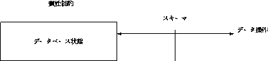

Next: 関係モデルと非正規関係モデル
Up: データベースの基礎知識
Previous: データベースとは何か
次にデータ・モデルを考えてみよう。これは実世界をデータベースという視点
から抽象化したモデルである。ふつう次の３つをデータ・モデルの構成要素と
して考える:
- データ構造
- これは実世界の情報を１つの構造として、すなわちその基
本要素と要素間の関係を定義するものである。このデータベース構造の不変部
分をスキーマといい可変部分をデータベース状態(実現値の集まり)という。
- データ操作
- データ構造に対して施される操作の定義であり、データ構
造に対応して、スキーマに対する定義演算とデータベース状態に対する操作演
算がある。
- 一貫性制約
- データベース状態が保つべき条件であり、１つの属性に対
応する値が満足すべき条件と他の属性との関係で制約される条件がある。
以上を簡単に図示すると、図1 のようになる。

図 1: データモデル
Kappa では、スキーマ中に(一貫性)制約も記述する。このスキーマは、データ
ベースの論理(概念)モデルと考えることができる。データの物理的配置などは
Kappa によって自動的に行われるので、それら (いわゆる内部モデル) はデー
タベース管理者以外は意識する必要はない。データ操作としては、原始コマン
ドがKLICプログラムとのインタフェースである。